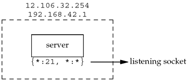
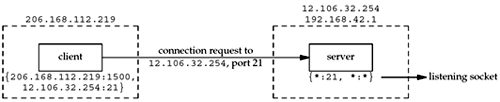
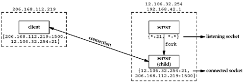
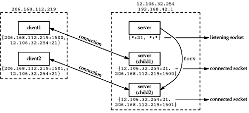

| [ Team LiB ] |
|
2.10 TCP Port Numbers and Concurrent ServersWith a concurrent server, where the main server loop spawns a child to handle each new connection, what happens if the child continues to use the well-known port number while servicing a long request? Let's examine a typical sequence. First, the server is started on the host freebsd, which is multihomed with IP addresses 12.106.32.254 and 192.168.42.1, and the server does a passive open using its well-known port number (21, for this example). It is now waiting for a client request, which we show in Figure 2.11. Figure 2.11. TCP server with a passive open on port 21. We use the notation {*:21, *:*} to indicate the server's socket pair. The server is waiting for a connection request on any local interface (the first asterisk) on port 21. The foreign IP address and foreign port are not specified and we denote them as *:*. We also call this a listening socket.
When we specify the local IP address as an asterisk, it is called the wildcard character. If the host on which the server is running is multihomed (as in this example), the server can specify that it wants only to accept incoming connections that arrive destined to one specific local interface. This is a one-or-any choice for the server. The server cannot specify a list of multiple addresses. The wildcard local address is the "any" choice. In Figure 1.9, the wildcard address was specified by setting the IP address in the socket address structure to INADDR_ANY before calling bind. At some later time, a client starts on the host with IP address 206.168.112.219 and executes an active open to the server's IP address of 12.106.32.254. We assume the ephemeral port chosen by the client TCP is 1500 for this example. This is shown in Figure 2.12. Beneath the client we show its socket pair. Figure 2.12. Connection request from client to server. When the server receives and accepts the client's connection, it forks a copy of itself, letting the child handle the client, as we show in Figure 2.13. (We will describe the fork function in Section 4.7.) Figure 2.13. Concurrent server has child handle client. At this point, we must distinguish between the listening socket and the connected socket on the server host. Notice that the connected socket uses the same local port (21) as the listening socket. Also notice that on the multihomed server, the local address is filled in for the connected socket (12.106.32.254) once the connection is established. The next step assumes that another client process on the client host requests a connection with the same server. The TCP code on the client host assigns the new client socket an unused ephemeral port number, say 1501. This gives us the scenario shown in Figure 2.14. On the server, the two connections are distinct: the socket pair for the first connection differs from the socket pair for the second connection because the client's TCP chooses an unused port for the second connection (1501). Figure 2.14. Second client connection with same server. Notice from this example that TCP cannot demultiplex incoming segments by looking at just the destination port number. TCP must look at all four elements in the socket pair to determine which endpoint receives an arriving segment. In Figure 2.14, we have three sockets with the same local port (21). If a segment arrives from 206.168.112.219 port 1500 destined for 12.106.32.254 port 21, it is delivered to the first child. If a segment arrives from 206.168.112.219 port 1501 destined for 12.106.32.254 port 21, it is delivered to the second child. All other TCP segments destined for port 21 are delivered to the original server with the listening socket. |
| [ Team LiB ] |
|